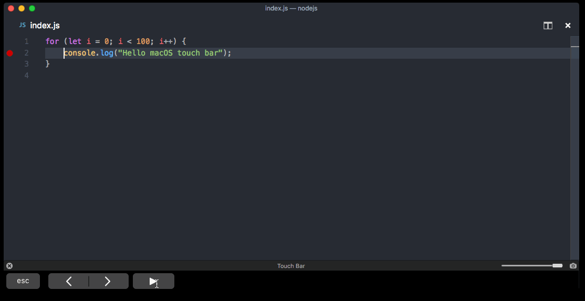
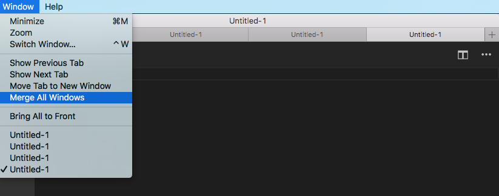
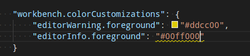
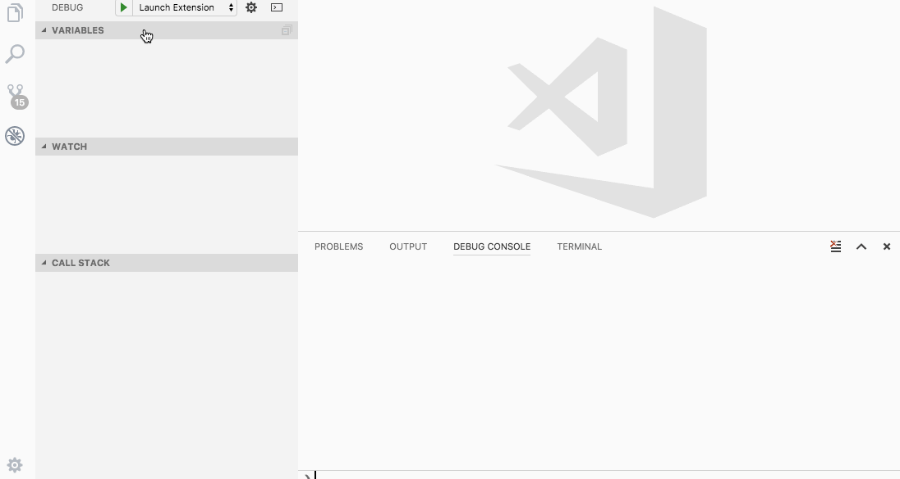
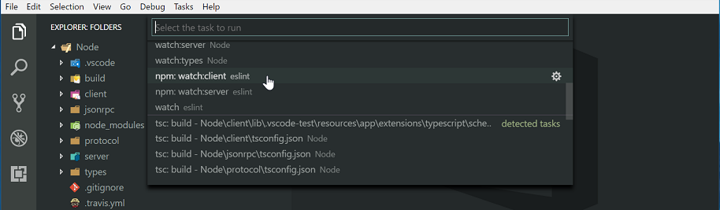
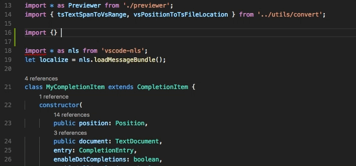
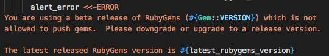
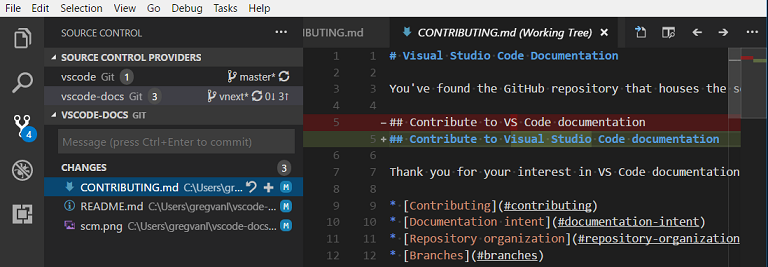

September 2017 (version 1.17)
Visual Studio Code 2017 9 月のリリースへようこそ。今回のバージョンには数多くの重要な更新があり、ハイライトは次の通りです:
- macOS Touch Bar support - Touch Bar actions for navigation and debugging.
- Source code folding improvements - Collapse region markers and off-side language blocks.
- Integrated Terminal performance - Terminal rendering is up to 45 times faster.
- Automatic import suggestions - See module and path import suggestions while coding.
- Debugging shows source location - Easily navigate from the Debug Console to source code.
- Better colorization of regex and format strings - Helps with parsing and identifying errors.
- Improved multiple SCM support - New UI to view changes in multiple source control repositories.
- New online documentation - Java language, ‘Tips and Tricks’, and Debugging Recipes topics.
- Preview: Multi-root workspaces - No reload on workspace updates, combined view of available tasks.
- Multi-root guide for extension authors - To help extenders be ready for multi-root workspaces.
オンラインでリリースノートを確認するには code.visualstudio.com の Updates に移動してください。
Cloud Developer Advocate Brian Clark による 1.187release highlights video もご確認ください。
リリースノートは VS Code の重要な機能に関連する次のセクションに構成されています。多くの更新があります:
- Workbench - Better macOS native tabs support, new editor label formats.
- Editor - Snippet transforms, more Emmet preferences, optimized history navigation.
- Languages - TypeScript 2.5.3, Extract Method triggers rename, language support in Markdown code blocks.
- Extension Authoring - macOS Touch Bar support, styled completions and signature help text.
Insiders: できるだけ早く新しい新機能を確認したいですか？夜間に更新するInsiders buildをダウンロードすれば、最新のアップデートをすぐに試すことが可能です。
ワークベンチ
macOS Touch Bar サポート
macOS Touch Bar にアクションを表示する機能が追加されました。エディターの履歴を移動するアクションと、デバッガを制御する完全なデバッグ ツールバーを追加しています:

拡張機能は新しい touchBar menu identifier を介して Touch Bar にコマンドを追加することができます。詳細については下記の Extension Authoring を参照してください。
macOS native window tab サポートの改善
macOS (Sierra) で "window.nativeTabs": true 設定を使用するとネイティブ ウィンドウ タブを有効にすることができます。今回のマイルストーンでは、ネイティブ タブの操作をよりしやすくしました。

もう 1 つは、タブの最後で新しいウィンドウをタブとして開く “+” アクションに確認できます。またタブを管理するために一般的なアクションをウィンドウ メニューに追加しました。
Note: 現在 macOS High Sierra (10.13) でネイティブ タブは部分的にしかサポートされていません。私たちは修正に取り組んでいます。お楽しみに！
新しい Visual Studio Code のロゴ
私たちは VS Code のロゴと配色を更新しました。Stable はオレンジ色に、Insider は緑色になります。
| Release | Stable | Insiders |
|---|---|---|
| macOS / Linux |  | |
| Windows |  |
Note: プラットホームによってはアプリケーション アイコンの OS キャッシュによって以前のロゴが表示される可能性があります。
編集メモ: Insider で変更が入った時点でいろいろな議論が既にされており、担当者が変更するつもりがないとも言っているのでこれで固定になると思っています。
–wait サポートの改善
VS Code はコマンド ラインから -wait 引数を指定して起動することにより開いているインスタンスが閉じられるまで待機できます。このマイルストーンでは開いているすべてのエディターが閉じられたときに呼び出しているプロセスを終了することで、この機能をより強力にしました。結果としてすでに開いているインスタンスから --wait を使うことができます。これはとても便利です。

Note: デフォルトでは開かれたインスタンスを再利用するようになりました。これを避けるには -n 引数をコマンド ラインに追加します。
ファイル エンコードに関する新しい機能
言語ごとに files.encoding 設定に加え files.autoGuessEncoding 設定を構成できるようになりました。また VS Code では CP 850 と CP 865 エンコードもサポートするようにもなりました。
エディター ラベルを制御する新しい設定
新しい設定の workbench.editor.labelFormat はエディターの既定ラベルを調整します。可能値は short, medium, long, default です。デフォルトでエディターは同じ名前のエディターが開かれているときのみファイルパスに関する情報を表示します。ほかのオプションを使用することでエディターのラベルはパス情報を常に表示することが可能です。

launch.json と tasks.json の ${workspaceFolder}
新しい置換変数 ${workspaceFolder} を導入しました。この変数は適切な launch.json や tasks.json を含むワークスペース フォルダーの絶対パスに置き換えられます。これは以前の ${workspaceRoot} と同じ効果がありますが、これからのマルチルート ワークスペースの構想ではもはや古い名前が十分でないと感じました。私たちは ${workspaceRoot} を非推奨にしていますが、後方互換性のためにまだサポートされます。変数置換の詳細についてはここを参照してください。
QuickOpen は ripgrep を使用します
QuickOpen (⌘P (Windows, Linux Ctrl+P)) はユーザーの入力フィルターを適用する前に ripgrep を使用してファイル名の完全なリストを取得するようになりました。Windows ユーザーは大規模なフォルダー上でパフォーマンスが向上するはずです。これは以前にリスト ファイル名を増やすために find を使用していた Linux と macOS と同等です。
エディター
折りたたみ
折りたたみで region marker がサポートされるようになりました。マーカーは言語構成で言語によって定義されます。
現在、次の言語でマーカーが定義されています:
- TypeScript/JavaScript:
//#regionand//#endregionand//regionand//endregion - C#:
#regionand#endregion - C/C++:
#pragma regionand#pragma endregion - F#:
//#regionand//#endregion - Powershell:
#regionand#endregion - VB:
#Regionand#End Region

各言語にはマーカー用のスニペットも用意されています。表示するには ‘#’ を入力してコード補完を呼び出します。
使用している言語用に region marker を構成するには、言語拡張機能の提供者に問い合わせてください。
オフサイド言語で折りたたみ
コード ブロックの off-side rule に従う言語では、空の行はその次の折りたたみ領域に属します。
原文: In languages that follow the off-side rule for code blocks, empty lines belong to the next folding region.

設定は言語設定で構成され、次の言語で有効になります:
Python, Yaml, Pug, Markdown, Clojure, CoffeeScript, FSharp
スニペット セレクター
Insert Snippet コマンドで表示されるスニペット ピッカーのドロップダウンは、User Snippets と Extension Snippets の 2 つのスニペット グループで表示されるようになりました。ユーザー定義のスニペットはリストの上に表示され、お気に入りのスニペットに素早くアクセスできます。
スニペット変換
VS Code スニペット エンジンは変数の変換(Transformations)をサポートするようになりました。Transformations は値を挿入する前に変数の値を変更できます。フォーマットは var_name/regular_expression/format_string/options です。次のサンプルはファイル名から派生した public Java class を作成するスニペットの例です。
|
${TM_FILENAME/(.*)\\.java/${1:/capitalize}/} が新しい部分です:
TM_FILENAMEの値を解決します。例:myClass.java。- 正規表現
/(.*)\\.javaを使用してそこで.javaで終わるベース名の一致グループを作成します。例:myClass。 - 最初に一致するグループの値をとり、大文字ではじめさせ (
/capitalize)、それを挿入します (MyClass)。
詳細については snippet grammar を参照してください。
Lightbulb の改善
- 新しい
editor.lightbulb.enabled設定はエディターでコード アクションを有効または無効にします。デフォルト値はtrueです。 - コード アクション メニューはデフォルトで最初のエントリーが選択され実行しやすくなります。
履歴の移動を改善
VS Code にはファイル内またはファイル間のエディターの履歴を移動するためのコマンドがあります (workbench.action.navigateBack, workbench.action.navigateForward)。このマイルストーンの間に履歴で不要なつっかえを減らすためにエクスペリエンスを微調整しました:
- We now require a minimum distance of 10 lines from one selection to another to add a new entry to history (previously we required a distance of 5 lines).
- Navigating less than 10 lines replaces the last history stop within the file with that location and thus avoids introducing unwanted stops.
In addition, we no longer center the selection vertically when navigating unless the selection is outside of the view. これにより移動中コンテキストに居続けることが容易になります。
警告色のカラーリング
情報を区別するために、警告破線に違う配色を使用できるようになりました:

Emmet preferences <a id=emmet-preferences”>
Emmet 2.0 の Emmet Preferences サポートをより追加し続けました。前回のリリースで追加した設定に加え 次を用意しています:
bem.elementSeparatorbem.modifierSeparatorfilter.commentBeforefilter.commentTriggerfilter.commentAfter
filter.commentAfter プリファランスのフォーマットは Emmet 2.0 とは異なりシンプルです。
たとえば、古いフォーマットの代わりに
|
次を使用するかもしれません
|
統合ターミナル
新しいレンダリング エンジン
統合ターミナルは状況に応じて約 5 ~ 45 倍速く描画する新しい canvas ベースのレンダリング エンジンを使用するようになりました。この変更により、入力レイテンシ、消費電力、ターミナルのフレーム レートが大幅に向上します。
詳細については blog post で詳しく読むことができます。
デバッグ
デバッグ コンソール メッセージにソースの場所を表示
デバッグ コンソールの出力メッセージで右側に originating source location を表示するようになりました:

このオリジナルをクリックするとエディターでソース ファイルが開きます。
Note: 次のデバッガは既にこの機能をサポートしています:
- Node.js - “inspector” protocol only
- Extension Host debugging
- Debugger for Chrome extension
私たちはこの機能を多くのデバッグ拡張機能が採用することを期待しています。
Node Debugging デバッグ
WSL 対応の第一歩
Bartosz Sosnowski (@bzoz) による PR のおかげで、Node.js デバッガ (このマイルストーンでは “legacy” プロトコルのみ) は Windows Subsystem for Linux (WSL) で Node.js のアプリケーションの起動とデバッグをサポートするようになりました。
この機能を使用すると Linux subsystem on Windows で実行されるように useWSL フラグをデバッグ構成に追加することができます。このフラグは WSL で Node.js ランタイムを起動するだけでなく、WSL と Windows 間で正しくパスをパップするようにデバッガを構成します。
次は WSL で hello.js をデバッグするための最も簡単なデバッグ構成です:
|
stdout/stderr から直接出力表示
console.log ではなく process.stdout.write を使用して stdout ストリームへの直接書き込みを行う Node.js ロギング ライブラリーがいくつかあります。これは高速ですが Node のデバッグ ソケットから送信されるものではなかったため、新しい ‘inspector’ プロトコルでデバッグする際にこれらのメッセージがデバッグ コンソールに表示されませんでした。
Vakhurin Sergey (@igelbox) からの PR #138 は、stdout/stderr 出力をデバッグ コンソールに表示するようデバッグ アダプターに指示する "outputCapture": "std" 起動構成オプションを追加しました。
タスク
タスクにマルチ フォルダー サポートを追加しました。複数のフォルダーを持つワークスペースを作成すると、タスク バージョン “2.0.0” を使用しているすべてのワークスペース フォルダーのタスクが収集され、対応する Run コマンドで表示します。起動構成は同じワークスペース フォルダーからタスクを preLaunch タスクとして参照することもできます。

Gulp, Grunt, Jake, npm のタスク自動検出はマルチルート ワークスペースもサポートするようになりました。また task contribution API は異なるワークスペース フォルダーに対するタスク貢献をサポートするように拡張されました。
なおマルチ フォルダー サポートは Insiders ビルドである櫃夜があります。
言語
TypeScript 2.5.3
VS Code に TypeScript 2.5.3 が含まれるようになりました。この更新ではメソッドの抽出リファクタリングやいくつかの重要な修正や改善が行われています。
JavaScript と TypeScript で import パスの候補
JavaScript と TypeScript は VS Code 1.9 以降の importパスに対して IntelliSense を提供しています。しかし、import を入力している間に手動で IntelliSense をトリガする必要があったためこの機能について知らなかった可能性がありました。VS Code 1.17 を使用すると import や require パスの入力を始めると自動的に module とパスの提案を表示します:

Dark+ と Light+ テーマのカラライゼーション
VS Code のビルトインの Dark+ と Light+ テーマでは、正規表現コンポーネントのハイライトより簡単に識別されるようになりました:

format string と string interpolation のカラライゼーションもいくつかの言語で改善されました。
Python:
Ruby:

メソッドの抽出時に名前変更
JavaScript と TypeScript のメソッドや関数の抽出リファクタリングは、抽出されたメソッドや関数で自動的に名前変更をトリガーするようになりました。
TypeScript watch ビルド タスクの自動検出
TypeScript は通常のビルド タスクとともににプロジェクト内の tsconfig.json ファイルにウォッチ タスクを自動的に作成するようになりました:
JavaScript と TypeScript IntelliSense の Markdown サポート
JavaScript や TypeScript の提案とパラメーター ヒントが Markdown コンテンツを表示するようになりました。
JSX 言語スコープの改善
JSX タグ内の javaScript 式は javaScript 言語として正しくマークされるようになりました。これにより、ブラケット マッチングやコード コメントなどの基本的な言語機能に関するバグが修正されます。
Markdown コード ブロックでの言語サポート
Markdown ファイルの囲まれたコード ブロックはその内容に言語モードを設定できるようになりました。つまり、ブラケット マッチングやコード コメントなどの基本的な言語機能では、Markdown の言語設定ではなくコード ブロックの言語設定を使用するようになります。

Markdown 参照リンクの検出
参照リンクと参照リンクの定義はエディターでリンクとして検出されるようになりました:
|
link definition をクリックすると [link definition]: に移動します。/path/to/link がリンクとして検出されています。
CSS 言語の改善
ビルトイン CSS/LESS/SCSS 言語サーバーが更新され、次の機能がサポートされるようになりました:
@supportsルールの検証と補完- クエリと
@importのサポート containといくつかの flex プロパティのサポート
R 言語の改善
R 言語はここで公開されている文法に基づいてシンタックス ハイライトを改善しました。
ソース管理
マルチ SCM サポートの改善
ソース管理プロバイダー UX で継続的な繰り返しにより master-detail の実装が可能になりました。

複数の利用可能なリポジトリーがあるとき、新しい SOURCE CONTROL PROVIDERS で概要を表示します。これらは、いくつかの SCM プロバイダーで提供することができます。たとえば Git リポジトリーと TFS ワークスペースを並べて表示することができるのです。このビューでリポジトリーを選択することで強調表示されます。複数のリポジトリーを選択するには ctrl+click か shift+click を使用します。これらは分割された下のビューに表示されます。
パフォーマンスの向上
ソース コントロール 拡張機能の API と UI についてはかなりのパフォーマンス向上がありました。全体的にエクスペリエンスは多くのオプジェクトを持つリポジトリーではるかにスムーズです。
Git stash コマンド
前回のリリースでこれを見逃したかもしれませんが、Krzysztof Cieślak (@Krzysztof-Cieslak) からの PR のおかげで、 VS Code には Source Control ビューの More (…) ドロップダウンで Git stash コマンドがあります。
新しいドキュメント
Java 言語サポート
新しい Java 言語のトピックでは、VS Code で優れた Java code intelligence とデバッグ サポートのために Java Extension Pack をインストールして使用する方法について説明しています。
ヒントとコツ
VS Code を使用してすばやく生産的になれるよう Tips and Tricks トピックを追加しました。これには VS Code チームが日常的に使用するお気に入りの機能とキーボード ショートカットが含まれています。
デバッグのレシピ
様々なデバッグ シナリオのために recipes に取り組んでおり、これらをガイドする新しいトピックと役立つブログ記事のリンクを提供する新しいトピックを追加しました。React, Angular, Electron や Docker のようなラインタイムのデバッグ フレームについては Debugging Recipes を参照してください。
Keyboard Shortcut Cheat Sheet の更新
キーボード ショートカット PDF を更新して Open User Settings (⌘, (Windows, Linux Ctrl+,)), Open Keyboard Shortcuts (⌘K ⌘S (Windows, Linux Ctrl+K Ctrl+S)) といった便利なコマンドのキーバインドを追加しました。
拡張機能オーサリング
拡張機能作成者のためのマルチ ルート ガイド
すべてのユーザーにマルチルート サポートを提供するときは非常に近いです。すべての VS Code コア機能 [SCM, Settings, Debug, Tasks, …] と拡張機能 [HTML, JS/TS, ESLint, Docker, …] はマルチルートのコンセプトをサポートするようになりました。
私たちは拡張機能をマルチルート ワークスペースを準備するための方法についてのガイドを作成しました。詳細については Adopting Multi Root Workspace APIs ガイドを参照してください。議論済みのすべての API は安定しており現在利用可能であると考えられています。ただしマルチルート ワークスペースは VS Code Insider リリースでのみ有効です。
拡張機能の作成者ガイドは次を説明しています:
- Basic APIs
- Settings
- Impact on extensions that have a language client/server model
このガイドに加え新しい API を使用する samples repository には新しいサンプルがあります。 フォルダー名が ‘multi’ のサンプルを検索してください (例: basic-multi-root-sample。
ファイルの保存/開くダイアログ
拡張機能 API には拡張機能がファイルやフォルダーを保存したり開いたりするためのダイアログを表示する新しい 2 つの関数があります。次のスニペットには画像ファイルを選択するダイアログが表示されます。
|
補完と署名のヘルプを改善
CompletionItems と SignatureHelp の API を拡張してこれらのドキュメントは MarkdownString として提供できるようになりました。これにより fancy rendering、埋め込みコード スニペット、ドキュメントへのリンクが可能になります。私たちの TypeScript と JavaScript 拡張機能はすでに MarkdownString を使用しています。
|
CompletionContext
CompletionItemProvider.provideCompletionItems は新しい CompletionContext パラメーターを使用して提供しています。このコンテキストには補完プロバイダーがどのようにトリガーされたかに関する情報が含まれています:
|
Touch Bar サポート
拡張機能は macOS で Touch Bar にコマンドを提供できるようになりました。新しい menu identifier touchBar はこの目的のために追加されています:
|
常にコマンド コンテキストは現在のアクティブなファイルで、when に基づきコマンドを動的に表示および非表示にすることができます。これはラベルまたはアイコンのどちらかを持つことができます。コマンドがアイコンを提供する場合 touch bar のスペースはとても限られているためラベルは表示されません。
Note: 現在コマンドのアイコンは PNG ファイルである必要があります。SVG はサポートされません。
‘active’ ビュー列を参照
エディターのレイアウトは 1, 2, 3 列に機能し showTextDocument 関数をしようするときは列を設定できます。ただし、現在アクティブな列を参照したいときがしばしばあります。これを簡単にするために、新しいシンボル列 ViewColumn.Active を追加しました。これは常に現在アクティブなカラムのドキュメントを表示しその列が何であるかを把握するのを助けます。
貢献者の Eric Amodio (@eamodio) に感謝します。
MarkedString vs MarkdownString
このリリースでは MarkedStrings のコマンド リンクを使用できないことに注意してください。これがあなたの拡張機能へ影響を与える場合、私達から既にコンタクトがされている可能性があります。新しい MarkdownString を使用してこれを信頼できるものとしてマークしてください。詳細と背景はここで確認してください。
新しいソース管理メニュー
scm/sourceControl menu id を使用して Source Control ビューの新しい SOURCE CONTROL PROVIDERS セクションでインライン ソース管理プロバイダーにコマンドを提供できるようになりました。現在、context menu commands のみがサポートされています。
タスク貢献 API
Task API は異なるワークスペース フォルダーに貢献しているタスクをサポートするように拡張されました。拡張機能でタスクを作成するコンストラクターには、タスクがグローバル、ユーザー ローカル、ワークスペース フォルダーに属するかを特定する追加の引数があります。コンストラクタのシグネチャは次のようになります:
|
デバッグAPIの更新
vscode.startDebug コマンドは非推奨です
7 月のリリースで適切な vscode.debug.startDebugging(...) APIの導入により、vscode.startDebug コマンドを使用してデバッグ セッションを開始する必要はなくなりました。私たちは 8 月に vscode.startDebug コマンドを非推奨にしています。10 月にこれを削除する計画です。この機能を取りやめることが難しい場合はここにコメントしてください。
Command vscode.workbench.customDebugRequest は非推奨です
7 月のリリースで適切な DebugSession.customRequest(...) API の導入により、vscode.workbench.customDebugRequest コマンドを使用してカスタム リクエストをデバッグ アダプターに送る必要はなくなりました。8 月に vscode.workbench.customDebugRequest は非推奨になりました。10 月にこれを削除する計画です。この機能を取りやめることが難しい場合はここにコメントしてください。
package.jsonでのデバッグ貢献
新しいアクティブ化イベント onDebug
新しいデバッグ API を使用するには VS Code が必要なとき利用するために、拡張機能は早期に DebugConfigurationProvider を登録する必要があります。通常 DebugConfigurationProvider は拡張機能の activate 関数に登録されるので、新しい onDebug アクティブ化イベントを導入しています。これはちょうどデバッグが開始する (例: 起動構成の設定やデバッグ セッションの起動) 前に発火します。
拡張機能が DebugConfigurationProvider を登録している場合は package.json の activationEvents 貢献に onDebug があることを確認してください。
アクティブ化イベント onDebug:type は非推奨です
DebugConfigurationProvider API の導入により、(‘type’ が debug type な) onDebug:type アクティブ化イベントを正しくサポートすることが難しくなりました。代わりに新しく導入されたアクティブ化イベント onDebug を使用することをお勧めします。
9 月のマイルストーンで onDebug:type のアクティブ化イベントを非推奨にし、10 月の更新でこれを削除する計画です。この機能を取りやめることが難しい場合はここにコメントしてください。
package.json で debuggers.startSessionCommand` を使用することは非推奨です
DebugConfigurationProvider 型で resolveDebugConfiguration メソッドを導入すると、debuggers 貢献ポイントで startSessionCommand を貢献する必要がなくなりました。したがって 8 月のリリースで startSessionCommand コマンドを非推奨にし 10 月に削除する予定です。この機能を取りやめることが難しい場合はここにコメントしてください。
package.json で debuggers.initialConfigurations を使用することは非推奨です
DebugConfigurationProvider 型で provideDebugConfigurations メソッドを導入すると、debuggers 貢献ポイントで debuggers.initialConfigurations を貢献する必要がなくなりました。したがって 8 月のマイルストーンで、コマンド ID を指定する機能を非推奨にし 10 月に削除する予定です(しかし JSON オブジェクトリテラルへの貢献サポートは続きます)。この機能を取りやめることが難しい場合はここにコメントしてください。
Debug Adapter Protocol
BreakpointEvent は removed reason をサポートします
BreakpointEvent の reason 属性の値に removed reason が追加されました。この追加により、デバッグ アダプターはそのクライアント(フロントエンド)にブレークポイントが削除されたことを通知できます。
Please note: このリリースでは VS Code がブレークポイントの new, changed, removed reason を完全にサポートするようになりました。以前までの VS Code では changed (or updated) breakpoint イベントのみをサポートしていました。breakpoint イベントが reason に正しい値を使用していることを確認してください。
Locale をデバッグ アダプターに渡すことができます
オプションでデバッグ アダプター プロトコルのクライアント(フロントエンド)は、現在の Locale をデバッグ アダプターに渡すことができるため、クライアントに渡された視覚的ユーザー情報(例: エラー メッセージ)に対して正しい変換を選択できます。initialize リクエストにはオプションの locale 属性がでました。
プレビュー: Remote File System API
私たちは “リモート ファイル システム”のサポートを模索している最中です。新しい API を使用するとファイルやフォルダーをエクスプローラーに追加したり、ファイル/フォルダーの作成、削除、移動、コピー、ファイルの読み書きをしたりできます。目標はリモート ソースからのアイテムが表示され、ローカル ディスクと同じような動作をすることです。
次のスクリーンキャプチャではディスク上のファイルのように Azure のファイルが表示されています。

これに慣れるには proposed-apis を参照し、さらに重要な ftp-sample を確認してください。私たちは API の更新と洗練にあわせてこのサンプルを最新の状態に保ちます。
プレビュー: Multi Root Workspaces
Note: マルチルート機能は安定版で利用できるまでは Insider ビルドでのみ使用可能です。試すには https://code.visualstudio.com/insiders から Insiders ビルドを入手してください。
1 つの VS Code インスタンスで複数のフォルダー(issue #396)を開くために対応を進めてきました。これまでのリリースではこの機能のプレビューが用意されました(1.14.0 release notes, 1.15.0 release notes, 1.16.0 release notes)。
今回のマイルストーンではウィンドウの再読み込みを行わずにワークスペースに移行することにフォーカスをあてて、マルチルート ワークスペースに対応する拡張機能用の API をさらに導入しました。
ウィンドウを再読み込みせずにワークスペースに入る
これまではワークスペースを作成/保存、ワークスペースにフォルダーを追加するときにウィンドウ全体をリロードする必要がありました。このウィンドウのリロードが必要なくなりマルチルートのエクスペリエンスがよりスムーズになりました。
拡張機能の推奨事項
拡張機能の推奨事項のサポートをマルチルート ワークスペースに拡張しました。すべてのルート フォルダーから拡張機能の推奨事項は統合され表示されます。また Extensions: Configure Recommended Extensions (Workspace) コマンドを使用してマルチルート ワークスペース用の推奨事項を構成することもできます。これによりワークスペース構成ファイルが開き extensions/recommendations セレクションに推奨事項を入力することができます。

新しい API: Workspace Folder Picker
VS Code でのマルチルート サポートの到来により、拡張機能が特定の WorkspaceFolder をユーザーに尋ねたいときがあることに気が付きました。新しい提案 API showWorkspaceFolderPick メソッドはピッカーを開き結果を返します。

新しい API: RelativePattern
特定の WorkspaceFolder へのファイル パスを簡単にフィルタリングできるように、新しい RelativePattern タイプを追加し、次の場所でサポートしました:
workspace.createFileSystemWatcherworkspace.findFiles(include, exclude)DocumentFilter#pattern
タイプは次のようなクラスです:
|
次の呼び出しを介して相対パターンを作成できます:
|
RelativePattern が使用されるとき、ファイル パスはパターンの基本パスに対して相対的にマッチングされます。たとえば /home/work/folder の基本パスと /home/work/folder/index.ts のファイルパスが与えられた場合 RelativePattern 内のパターンは index.ts に一致します。
賢いワークスペース ファイル形式の保存
ワークスペース ファイルをディスクで保存するとき、ファイルが既にスラッシュを使用している場合には Windows 上でパスに普通のスラッシュを使用することをお勧めします。(編集メモ: バックスラッシュを使用している場合?)これにより Windows と他のプラットホーム間でワークスペース ファイルを簡単に共有できるようになります。
さらに、ワークスペース ファイル内のコメントを保存できるようになりました。JSON はファイル内のコメントを許可していませんが、VS Code 設定に使用しているのと同じ JSON パーサーを使用することで、コメントを許可し、エラートレラントを高めました。たとえば、末尾のカンマでワークスペース ファイル全体が無効になることはありません。
ワークスペースのフォルダー名
構成ファイル内の各フォルダーに name プロパティを割り当てることができるようになりました。この名前はエクスプローラーで表示され同じベース名を持つ複数のワークスペース フォルダーで使用されます。
エンジニアリング
問題管理の自動化
私たちは Probot インスタンスの使用範囲をメイン リポジトリー超えて拡張しました。これを使用して私たちの拡張機能と他のリポジトリーで issue の自動アサインと “needs more info” の自動クローズをするようになります。
注目の変更
- 27285: Onedrive 配下にあるフォルダーを開くことができません
- 25934: 高 DPI の外部モニターで VS Code がちらつく
- 35148: VS Code がオフスクリーンで開きます
- 22696: Cmd-A は保存dialogの save-as フィールドで選択できません
Thank You
最後になりましたが、VS Code をより良いものへするために協力してくれた次の方々に多大なる感謝を込めて:
vscodeへの貢献:
- Arthur Ozga (@aozgaa): report tsserver response error as telemetry PR #34860
- Brandon Bloom (@brandonbloom): Implement “Go Last” PR #33715
- @DatGuyJonathan: Maintain focus on stopped thread when stepping a multithreaded session PR #34401
- Dustin Campbell (@DustinCampbell): Fix C# TextMate grammar to properly highlight statement-level await expressions PR #33687
- Eric Amodio (@eamodio): Closes #27408 - Adds ViewColumn.Active PR #34649
- Putta Khunchalee (@ExUltima): Replace bash shebang with ‘#!/usr/bin/env bash” for portability PR #34543
- Alexander Fadeev (@fadeevab): Makefile colorization: fix old issues and improvement (~4 changes) PR #33327
- Faustino Aguilar (@faustinoaq): Fix #33939 PR #34795
- Felix Becker (@felixfbecker): Make ExtensionTipsService multi-root aware PR #32106
- Emily Marigold Klassen (@forivall): Actually don’t sort folders when they are all root folders PR #34052
- Ilie Halip (@ihalip): fixed the terminal and find widget key presses PR #33935
- Yuki Ueda (@Ikuyadeu): Fix word highlighting Solarized Dark theme #28343 PR #33820
- Jep (@jep-a): Add “indentationRules” for Lua PR #31696
- Keegan Carruthers-Smith (@keegancsmith)
- Alex Cao (@KuromiAK): Improve search aria label generation performance PR #34491
- showmeear (@mazamachi): Fix #32822. Stop propagation keydown event when keybinding. PR #32826
- Tony Zhang (@neutrinonerd3333): Support commands for standalone language completion items PR #32738
- Nick Snyder (@nicksnyder)
- Oliver Joseph Ash (@OliverJAsh)
- Dániel Tar (@qcz)
- @rinqu-eu: Add indentationRules to lua PR #34303
- Greg Zimmerman (@thezim): Fix Select-Object highlighting issue. PR #34701
- Nguyen Long Nhat (@torn4dom4n): Updated the license to MIT PR #34486
- Tony Valderrama (@tvald): Add settings to control the tab subtitle style (#12965) PR #33815
- Simon Chan (@yume-chan): Scroll to selection after cursorUndo command PR #34933
- Yuki Ueda (@Ikuyadeu): Richer R syntax definition by R-Box PR #28982
vscode-eslint: への貢献:
- 陈三 (@chenxsan): Update sourceMaps launch option to true PR #294
language-server-protocolへの貢献:
- Paul Brousseau (@object88): Fixing ‘paramters’ and ‘reponse’ typos PR #295
vscode-node-debug への貢献:
- Bartosz Sosnowski (@bzoz): Add support for Windows Subsystem Linux PR #158
vscode-node-debug2 への貢献:
- Vakhurin Sergey (@igelbox): Add a launch.json option to capture output from stdoutput and stderr streams PR #138
- Nguyen Long Nhat (@torn4dom4n): Ignore Travis and Appveyor PR #141
vscode-generator-code への貢献:
- Jiri Spac (@capaj): couple of style fixes, var->const PR #57
- Christopher Roach (@croach): Fixing ‘no such file or directory’ error when using
workspaceFolderPR #89 - Markus Eliasson (@eliasson): Update gitignore to include
.vscode-testPR #90 - Gilmore Davidson (@gilmoreorless): Typo and formatting nitpicks PR #85
vscode-github-issues-prs への貢献:
vscode-recipes への貢献:
- ElAndyG (@andyg8180): removed “Launch with” to reflect the json PR #25
- Anthony Sneed (@tonysneed): Update Minimum Angular CLI Version PR #22
localization への貢献:
Transifex でコミュニティーによる多言語化を開始してから 6 ヶ月です。現在 Transifex の VS Code project チームには 400 人以上のメンバーがいます。新しい翻訳の提供、翻訳への投票、プロセスの改善案による貢献に感謝します。
このリリースでトップ貢献者のスナップショットです。貢献者のリストを含むプロジェクトの詳細については https://aka.ms/vscodeloc を参照してください。
- French: Antoine Griffard.
- Italian: Aldo Donetti, Piero Azi, Giuliano Latini.
- German: LosSandreas, Carsten Kneip, Christian Gräfe, Dejan Dinic, Levin Rickert.
- Spanish: Raul Rama, Carlos Mendible, Roberto Fonseca, Jorge Serrano Pérez, David Triana, José M. Aguilar, Andy Gonzalez.
- Japanese: EbXpJ6bp, Yuichi Nukiyama, Yuki Ueda, tanaka_733, Kyohei MORIYAMA, Yosuke Sano.
- Chinese (Simplified): Joel Yang, YingFeng, pluwen, Shawn Dai, Wang Weixuan, 林昊.
- Chinese (Traditional): Winnie Lin, Duran Hsieh, Ke-Hsu Chen, Poy Chang.
- Korean: HANSEULMARO KIM.
- Portuguese (Brazil): Roberto Fonseca, Bruno Sonnino, Danilo Dantas, Alessandro Fragnani, Andy Gonzalez.
- Hungarian: Tar Dániel, Attila Csaba Kiss.
- Turkish: Adem Coşkuner.
- Czech: Vojtěch Habarta, Frantisek Veris, Vít Staniček.
- Dutch: Gerald Versluis, Maarten van Stam, Sander van de Velde, Armand Duijn, Splinter Suidman, Geert van der Cruijsen, Peter Hut.
- Indonesian: Joseph Aditya P G, Herman Prawiro.
- Polish: Wojciech Maj, Patryk Adamczyk.
- Swedish: Joakim Olsson, Christian Svensson.
- Bengali: Ferdous Ahmed, Reaz Patwary.
- Vietnamese: Thanh Phu.